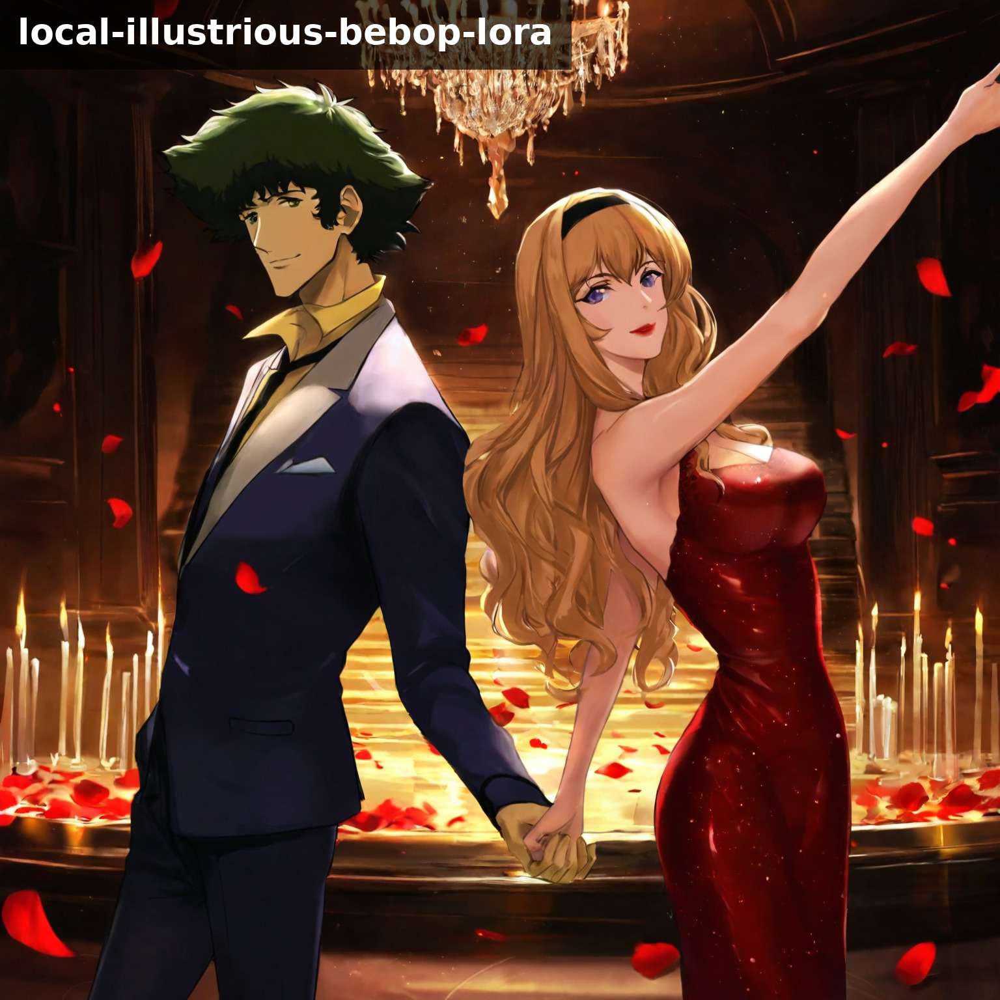
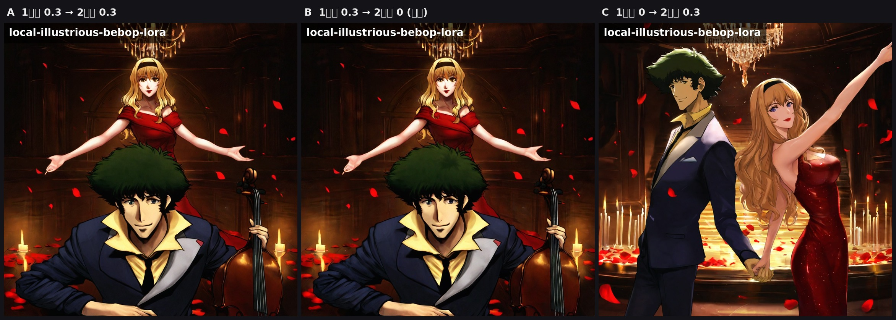
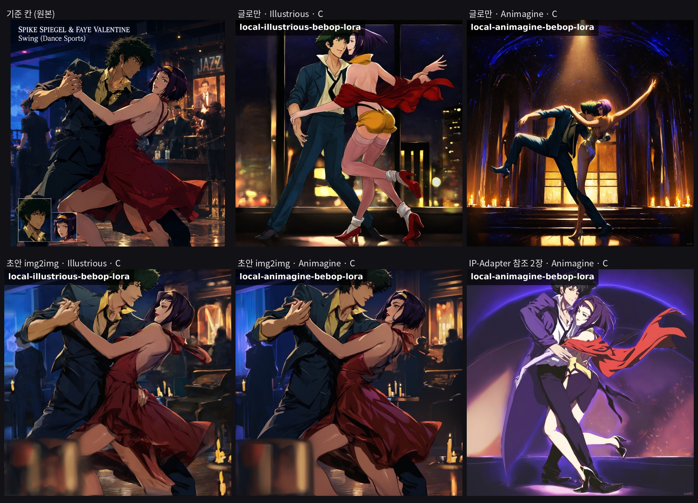

2026-10-03 · 룸바 한 장을 같은 seed 로 세 가지 설정(A·B·C)으로 뽑아 비교했고, 사용자가 C 를 골랐다. 이 문서는 C 가 무엇이고, 어떻게 돌리며, 무엇이 아직 부족한지를 적는다.
독자: 개발 경력 6개월차 비전공자. 처음 나오는 용어는 그 자리에서 풀고 맨 끝 용어 사전에 다시 모았다.
왼쪽이 고른 그림(C), 오른쪽이 세 설정을 나란히 둔 비교다. 셋 다 seed 801, Illustrious XL v2.0, 같은 프롬프트다. 다른 건 LoRA 를 어느 단계에 켰나 하나뿐이다.


고품질(HQ) 모드는 한 장을 두 번에 걸쳐 만든다. A1111 에서 hires fix 라 부르는 방식이다. 8GB 그래픽카드로 1536 크기를 한 번에 그리면 메모리가 넘치고 구도도 흐트러져서, 작게 그린 뒤 키워서 다듬는다.
노이즈(모래알 화면)에서 시작해 글(프롬프트)만 보고 그림을 처음 그린다.
여기서 구도·자세·누가 나오는지가 전부 정해진다. DPM++ 2M Karras 35 steps, CFG 5.
1단계 그림을 1.5배로 늘린 뒤, 그 위를 45% 만 다시 칠한다. 55% 는 그대로 남는다.
그래서 선·질감·조명은 바뀌어도 사람 위치나 자세는 못 바꾼다. 28 steps.
C 설정은 이 두 단계에 서로 다른 역할을 준다. 1단계는 "장면을 짜는 사람", 2단계는 "얼굴과 질감을 입히는 사람"으로 나눈다.
LoRA(로라)는 큰 모델 위에 얹는 작은 추가 가중치다. 여기서는 Civitai 의 Cowboy Bebop LoRA(Illustrious 로 학습, 스파이크·페이·일렉트라를 안다)를 쓴다. 세기 0.3 은 "30% 만큼 섞어라"는 뜻이다.
| 설정 | 1단계 LoRA | 2단계 LoRA | A 와의 평균 밝기차 | 나온 그림 |
|---|---|---|---|---|
| A | 0.3 | 0.3 | — | 스파이크가 첼로를 들고 앉고, 줄리아가 뒤에서 팔을 벌림. 영화 스틸 느낌. 춤이 아님 |
| B | 0.3 | 0 | 1.2 | A 와 사실상 같은 그림. 질감만 아주 조금 다름 |
| C | 0 | 0.3 | 37.4 | 둘이 서서 손을 잡은 춤 장면. 유화에 가까운 피부·조명. 사용자가 고름 |
"평균 밝기차"는 두 그림을 흑백으로 바꿔 픽셀마다 밝기 차이를 재고 평균 낸 값이다(0 이면 같은 그림, 255 면 정반대). A 와 B 가 1.2 라는 건 2단계 LoRA 는 그림을 거의 못 바꾼다는 뜻이고, C 가 37 이라는 건 1단계가 그림을 결정한다는 뜻이다.
| 항목 | 값 | 비고 |
|---|---|---|
| 체크포인트 | Illustrious XL v2.0 (비교에 쓴 것) · Animagine XL 4.0 도 같은 설정 | ~/models/sdxl/ |
| LoRA | cowboy-bebop-illustrious-v2.safetensors · 1단계 0 · 2단계 0.3 | 스타일 LoRA 를 더 얹을 때도 2단계에만, 0.3 이하 |
| 해상도 | 1단계 1024×1024 → 2단계 ×1.5 = 1536×1536 | 포스터 패널은 832×1216(2:3) |
| VRAM 기본값 | 글 인코더 CPU 내리기 · 1단계 VAE 타일링 | 2026-10-03 실측으로 서버 기본값. 한 장 1분 안팎, 피크 6.7GB |
| 샘플러 / steps | DPM++ 2M Karras · 1단계 35 · 2단계 28 | |
| CFG | 5 | 글을 얼마나 세게 따를지. 높이면 색이 타고 자세가 굳는다 |
| denoise(2단계) | 0.45 | 다시 칠하는 비율 |
| seed | 801 | 같은 seed = 같은 노이즈 출발점. 비교할 때 고정한다 |
| clip skip | 주지 않는다 | diffusers 에 주면 Illustrious v2.0 이 노이즈가 된다(2026-10-02 실측) |
| 프롬프트 | gen_genre_multi.py 의 TAG_SCENES["bebop_spike_faye"]["dancesport"] + 품질 접두 + 네거티브 | 긴 프롬프트는 서버가 75토큰씩 잘라 이어 붙인다 |
저장소 루트에서 아래 한 줄이면 된다. 스크립트가 서버를 띄우고, 한 장 뽑고, 서버를 내린다. 한 프로세스에서 고품질을 연달아 돌리면 2~3장째 메모리가 넘쳐서 한 장마다 서버를 새로 띄운다.
# HR_LORA = 2단계 LoRA 세기, 세 번째 인자 0 = 1단계 LoRA 세기
HR_LORA=0.3 bash docs/prototype/local-sd/hq_one_by_one.sh bebop_spike_faye local-illustrious-bebop-lora 0 2026-10-03-sample dancesport
# 인자 순서: <프롬프트 묶음> <모델> <1단계 LoRA 세기> <실행ID> <장르...>
# 결과: docs/prototype/assets/genres/compare/<실행ID>/<모델>/<장르>.jpg스크립트 안에서 실제로 부르는 클라이언트 명령은 이것이다. 옵션 이름만 알면 직접 불러도 된다.
uv run --with pillow --python 3.12 docs/prototype/gen_genre_multi.py \
--style bebop_spike_faye --model local-illustrious-bebop-lora --only dancesport \
--lora-weight 0 --hr-lora-weight 0.3 --hq --run 2026-10-03-sample
# --no-label 라벨을 굽지 않는다(채택한 카드로 쓸 때)
# --init-image 그림.png 1단계를 그 그림에서 시작(img2img, --init-strength 0.6)
# --ip-ref 얼굴.png IP-Adapter 참조 이미지(외형 고정, 미검증)hq_one_by_one.sh → gen_genre_multi.py(프롬프트 조립, HTTP 요청) → local-sd/server.py(모델 적재, 두 단계 생성, 포트 7860) → JPG 저장 → 라벨 굽기. 서버는 A1111 의 /sdapi/v1/txt2img 요청 형식을 흉내 낸다.클라이언트는 요청에 loras: [{name, weight: 0}] 와 hr_lora_weight: 0.3 을 함께 넣는다. 서버 txt2img() 는 이렇게 처리한다.
base_off), LoRA 를 2단계 세기로 올려 둔 뒤 pipe.disable_lora() 로 1단계에서만 끈다.pipe.enable_lora() 와 set_adapters(..., 0.3) 로 켠다. 로그에 [hires] LoRA 0.3 이 찍힌다.apply_loras() 가 세기 0 인 LoRA 를 아예 올리지 않아서, 2단계에서 켤 어댑터가 없었다. 그 상태로 돌리면 C 는 "LoRA 없음"과 같은 결과를 내면서도 로그엔 아무 오류가 없다. 비교를 돌리기 전에 코드를 읽어서 잡았고, 돌린 뒤 로그의 [lora] 1단계 끔(2단계만) 과 [hires] LoRA 0.3 으로 확인했다.standing apart, fingertips touching 으로 쓰여 있었다. 나머지 절반은 태그 모델이 자세 지시를 느슨하게 따르기 때문이다.| 순서 | 방법 | 비용 | 상태 |
|---|---|---|---|
| ① | 프롬프트 앞쪽에 facing each other, closed hold, holding hands, dance frame, 네거티브에 standing apart, side by side, back to back | 없음 | 콜라주용 댄스스포츠 프롬프트에 적용 |
| ② | hires 없이 1024 로 seed 를 여러 개 뽑고(장당 약 1분) 홀드가 맞는 seed 만 고품질로 | 시간만 | 바로 가능 |
| ③ | img2img — 기준 그림의 칸이나 실제 댄스스포츠 사진을 초안으로 넣고 60% 만 다시 그린다. 구도가 그대로 오고 VRAM 도 안 는다 | 서버에 초안 입력(--init-image) 추가 | 실측 통과 — 단 재생성은 35%. 60% 는 얼굴·비율이 무너졌고 35% 에서 기준의 비율이 그대로 남은 채 선명해졌다(카드 4장, samples/cards/) |
| ④ | ControlNet OpenPose 로 뼈대를 강제 | VRAM +2.5GB | 8GB 에서 미검증. 해상도를 낮춰야 할 가능성 |
IP-Adapter(참조 사진으로 외형 고정)는 얼굴·옷을 고치는 도구이지 자세를 고치는 도구가 아니다. 섞어 쓸 수는 있지만 자세 문제의 답은 아니다.

같은 카드(Animagine · 콜라주 댄스스포츠 · C · seed 801)로 조건을 바꿔 가며 쟀다. 처음엔 한 장이 19분이었다.
| 조건 | 시간 | 요청 피크 | 그림 차이(기준 대비 평균 밝기차, 0~255) |
|---|---|---|---|
| 기준 | 1127초 | 9.0GB | — |
| 어텐션 슬라이싱 | 1490초 | 9.0GB | 5.8 — 탈락(더 느리고 피크 그대로) |
| 2단계 배율 1.375(1408) | 593초 | 9.0GB | 해상도 손해 — 쓰지 않음 |
| 글 인코더 CPU 로 내리기 | 152초 | 7.5GB | 0.0 — 픽셀까지 동일 |
| + 1단계 VAE 타일링 | 67초 | 6.7GB | 2.9 — 눈으로 구분 불가 |
| Illustrious, 같은 두 조건 | 1176 → 90 → 62초 | 9.0 → 7.5 → 6.7GB | 0.0 → 1.9 |
| 부품 | 파라미터 | fp16 VRAM | 언제 쓰나 |
|---|---|---|---|
| UNet | 2567M | 4.78GB | 그림을 그린다. 1·2단계 내내 |
| 글 인코더2 (OpenCLIP bigG) | 695M | 1.29GB | 프롬프트를 벡터로. 시작할 때 한 번 |
| 글 인코더1 (CLIP-L) | 123M | 0.23GB | 위와 같음 |
| VAE | 84M | 0.16GB | 잠재 공간 ↔ 픽셀 |
| 합계 | 3469M | 6.46GB | 실측 6.6GB |
8GB 카드의 작업 여유가 1.5GB 뿐인데, 그중 1.5GB 를 그림 그리는 동안 노는 글 인코더가 차지하고 있었다. 그래서 피크가 9.0GB 로 넘쳤고, WSL 이 넘친 만큼을 시스템 RAM 으로 보내며 수십 배 느려졌다. 증상은 GPU 사용률 100% 에 전력 25W(계산할 때는 80~115W)다 — 계산이 아니라 메모리를 기다리는 모습이다.
compare/2026-10-03-vram-tiling-check.jpg).배율을 바꿔도 슬라이싱을 해도 피크가 9.0GB 로 똑같았던 것이 결정적 단서였다 — 피크의 자리가 2단계가 아니라는 뜻이었고, 그래서 상주 구성을 뜯어봤다. 서버를 한 장마다 새로 띄우는 방식(어젯밤 해결책)은 장 사이의 누적을 막는 것이지 한 장 안의 피크는 못 줄인다.
bash 는 스크립트 파일을 실행하면서 바이트 위치로 읽는다. B 가 도는 중에 hq_one_by_one.sh 에 줄을 끼워 넣었더니 B 가 끝나는 자리에서 syntax error near unexpected token 'done' 이 났다. C 는 새 파일로 시작해서 멀쩡했다. 고칠 일이 있으면 복사본을 고치고 다음 실행부터 쓴다. 이 규칙을 적은 지 세 시간 만에 머리말 주석 한 줄을 넣다가 같은 오류를 한 번 더 냈다. 결과 파일은 무사했지만, 돌아가는 동안은 그 파일을 아예 열지 않는 게 맞다.
"앞 작업이 끝나면 시작"을 pgrep -f "hq_one_by_on[e].sh" 로 기다리게 했더니, 대기 셸 자신의 명령줄에 그 스크립트 이름이 들어 있어 자기 자신을 계속 찾았다. 대괄호 트릭은 pgrep 의 argv 만 피하지 부모 셸의 argv 는 못 피한다. 두 대기열이 한 시간 동안 시작을 못 했다. 이후로는 대기 루프 없이 한 사슬에 순서대로 넣거나, 앞 작업의 출력 파일에 끝 표시가 찍히는 걸 기다린다.
| 파일 | 무엇 |
|---|---|
docs/prototype/assets/genres/samples/ | C 룸바 샘플, A·B·C 비교, 설정과 재현 명령을 적은 README |
docs/prototype/local-sd/server.py | 로컬 생성 서버. 두 단계 생성, 단계별 LoRA, 청크 인코더, IP-Adapter, 초안 입력 |
docs/prototype/local-sd/hq_one_by_one.sh | 한 장마다 서버를 새로 띄우는 고품질 배치. HR_LORA·IP_ARGS 환경변수 |
docs/prototype/gen_genre_multi.py | 프롬프트 묶음(TAG_SCENES), 모델 목록, 클라이언트 옵션 |
docs/prototype/prompts/bebop-poster-prompts.md · .json | 콜라주 포스터용 패널 6장 프롬프트(Animagine·Illustrious). C 설정 반영 |
docs/prototype/assets/reference/ | 기준 콜라주 원본, 댄스스포츠 칸 초안용 크롭, 인셋 초상 2장 |
docs/Review.md 2026-10-03 ⑧~⑪ | 실험 경위와 판단. 이 문서의 원본 기록 |
| 용어 | 뜻 |
|---|---|
| 체크포인트(checkpoint) | 그림 모델 본체 파일. Animagine XL 4.0, Illustrious XL v2.0 처럼 SDXL 을 애니 그림으로 다시 학습한 것 |
| LoRA(로라) | 본체 위에 얹는 작은 추가 가중치. 특정 캐릭터나 화풍을 가르친다. 세기 0~1 로 섞는 비율을 정한다 |
| txt2img / img2img | 글에서 그림 / 그림에서 그림. img2img 는 원본을 얼마나 다시 칠할지(denoise)를 정한다 |
| hires fix | 작게 그린 뒤 키워서 다시 칠하는 두 단계 방식. 메모리를 아끼고 구도를 지킨다 |
| denoise(디노이즈 강도) | img2img 에서 원본을 다시 칠하는 비율. 0.45 면 45% 가 바뀌고 55% 는 남는다 |
| seed(시드) | 노이즈 출발점을 정하는 숫자. 같으면 같은 출발점이라 설정 비교에 쓴다 |
| CFG | 프롬프트를 얼마나 세게 따를지. 5~7 이 보통 |
| 샘플러 / steps | 노이즈를 걷어내는 방법과 횟수. DPM++ 2M Karras 35 는 "그 방법으로 35번" |
| VRAM | 그래픽카드 메모리. 모델과 작업 중인 그림이 여기 올라간다. 넘치면 멈추거나 매우 느려진다 |
| IP-Adapter | 참조 사진을 보고 외형을 따라 그리게 하는 추가 모듈. 자세는 못 고친다 |
| ControlNet OpenPose | 뼈대 그림으로 자세를 강제하는 추가 모델. 메모리를 많이 쓴다 |